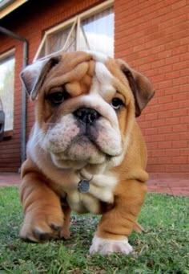
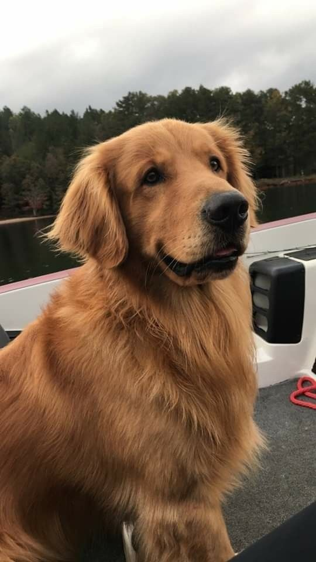
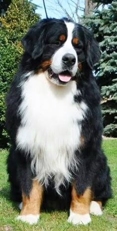

Nuestros Pulgosos Favoritos
cachorro de bulldog inglés

Tamaño: De mediano tamaño, suelen pesar entre 18-25 kg.
Carácter: Son generalmente tranquilos, cariñosos y amigables, aunque pueden ser algo testarudos.Se llevan bien con los niños y otras mascotas.
Cuidados: Requieren atención especial a sus pliegues faciales para evitar infecciones, así como ejercicio moderado debido a su tendencia al sobrepeso.Esperanza de vida: Entre 8 y 10 años.
Golden Retriever

Tamaño: Los Golden Retrievers son perros de tamaño mediano a grande, con un peso que suele oscilarentre 25 y 34 kg.
Carácter: Son conocidos por ser amigables, leales y muy inteligentes. Son excelentes como perros de compañía y suelen llevarse muy bien con los niños y otras mascotas.
Energía: Son perros activos que disfrutan de actividades al aire libre como nadar y jugar a traer objetos.
Entrenamiento: Debido a su inteligencia y naturaleza cooperativa, son fáciles de entrenar y son muy utilizados como perros de servicio, guía y rescate.
Cuidado del pelaje: Tienen un pelaje denso y de longitud media, que requiere cepillado regular para evitar enredos y la acumulación de pelo muerto.
Bernese Mountain Dog

Tamaño: Es un perro grande, con un peso que puede oscilar entre 35 y 55 kg. Los machos tienden a ser más grandes que las hembras.
Carácter: Son conocidos por ser perros tranquilos, leales y afectuosos. Son amigables y buenos con los niños, lo que los convierte en excelentes compañeros familiares.
Pelaje: Su pelaje es largo, suave y tricolor: negro, blanco y marrón, con una mancha blanca en el pecho y la cara, y manchas marrones sobre los ojos y en las patas.
Energía: Aunque son perros grandes, no son extremadamente activos, pero disfrutan de paseos y actividades al aire libre. Les gusta estar en climas fríos debido a su espeso pelaje.
Cuidado: Requieren cepillado regular para mantener su pelaje limpio y sin enredos, y atención veterinaria para prevenir problemas articulares, comunes en razas grandes.